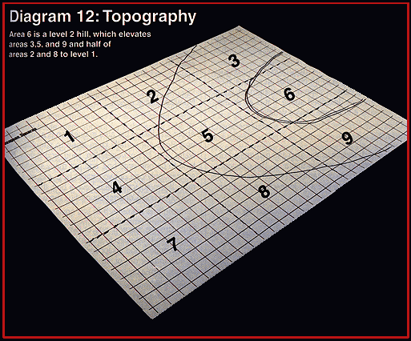

Step Two: Topography
Take your battlefield and divide it into nine sections, like a tic-tac-toe
board. The lay of the land may place some parts of the battlefield higher than the
other parts. Each of these nine sections is assigned a height relative to the
others; from these different heights, you’ll derive the slopes of your
battlefield. (If this is an indoors fight, ignore this step.)
First, determine the base topography for your battlefield: flat, hilly, or
broken. Marshes, swamps, plains, and some fields and forests are flat; hills,
deserts, and most other fields and forests are hilly; and badlands, caves, some
deserts, and mountains are broken.

Table of Contents